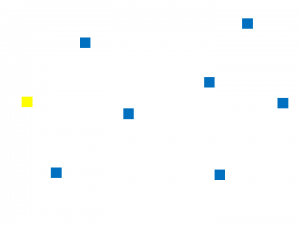
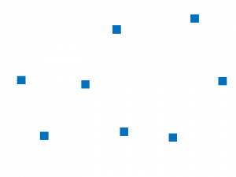

<!DOCTYPE html>
<html>
    <head>
        <title>My experiment</title>
        <script src="jspsych-6.0.5/jspsych.js"></script>
        <script src="jspsych-6.0.5/plugins/jspsych-html-keyboard-response.js"></script>
        <script src="jspsych-6.0.5/plugins/jspsych-image-keyboard-response.js"></script>
        <link href="jspsych-6.0.5/css/jspsych.css" rel="stylesheet" type="text/css"></link>
    </head>
    <body></body>
    <script>
    	/* initialize timeline */
    	var timeline = [];
    	// define welcome message
    	var welcome = {
  			type: "html-keyboard-response",
  			stimulus: "Welcome to the experiment. Press any key to begin."
		};
		timeline.push(welcome);

		var instructions = {
 			type: "html-keyboard-response",
			stimulus: "<p>In this experiment, a factor will appear in the center " +
     			"of the screen among many dots.</p><p>If the factor is <strong>present</strong>, " +
     			"press the letter F on the keyboard as fast as you can.</p>" +
     			"<p>If the circle is <strong>absent</strong>, press the letter J " +
      			"as fast as you can.</p>" +
      			"<div style='width: 700px;'>"+
      			"<div style='float: left;'></img>" +
      			"<p class='small'><strong>Press the F key</strong></p></div>" +
      			"<div class='float: right;'></img>" +
      			"<p class='small'><strong>Press the J key</strong></p></div>" +
      			"</div>"+
      			"<p>Press any key to begin.</p>",
      		post_trial_gap: 2000
		};
		timeline.push(instructions);
        // make the present and absent saved as stimuli

        var pattern = [
        ["img/absent.png", "img/absent.png", 0],
        [ 0, "img/absent.png", 0],
        ["img/absent.png", "img/absent.png", 0]
        ];

        var image_size = 100; // pixels

        var grid_stimulus = jsPsych.plugins['vsl-grid-scene'].generate_stimulus(pattern, image_size);

        var test_stimuli = [
            { stimulus: "img/present.png", data: {test_part: 'test', correct_response: 'f'}},
            { stimulus: "img/absent.png", data: {test_part: 'test', correct_response: 'j'}},
            { stimulus: "img/present16.png", data: {test_part: 'test', correct_response: 'f'}},
            { stimulus: "img/absent16.png", data: {test_part: 'test', correct_response: 'j'}}
        ];
        // add a cross between tests
        var fixation = {
            type: 'html-keyboard-response',
            stimulus: '<div style="font-size:60px;">+</div>',
            choices: jsPsych.NO_KEYS,
            trial_duration: 1000
        }
        var test = {
            type: "image-keyboard-response",
            stimulus: jsPsych.timelineVariable('stimulus'),
            choices: ['f','j'],
            data: jsPsych.timelineVariable('data'),
            on_finish: function(data){
                data.correct = data.key_press == jsPsych.pluginAPI.convertKeyCharacterToKeyCode(data.correct_response);  
            }
        }
        var test_procedure = {
          timeline: [fixation, test],
          timeline_variables: test_stimuli,
          randomize_order: true,
          repetitions: 4
        }

        timeline.push(test_procedure);

        var debrief_block = {
          type: "html-keyboard-response",
          stimulus: function() {

            var trials = jsPsych.data.get().filter({test_part: 'test'});
            var correct_trials = trials.filter({correct: true});
            var accuracy = Math.round(correct_trials.count() / trials.count() * 100);
            var rt = Math.round(correct_trials.select('rt').mean());

            return "<p>You responded correctly on "+accuracy+"% of the trials.</p>"+
            "<p>Your average response time was "+rt+"ms.</p>"+
            "<p>Press any key to complete the experiment. Thank you!</p>";

            }
        };
        timeline.push(debrief_block);


		// start the experiment
    	jsPsych.init({
       		timeline: timeline,
            on_finish: function() {
                jsPsych.data.displayData();
            }
    	})

    </script>
</html>